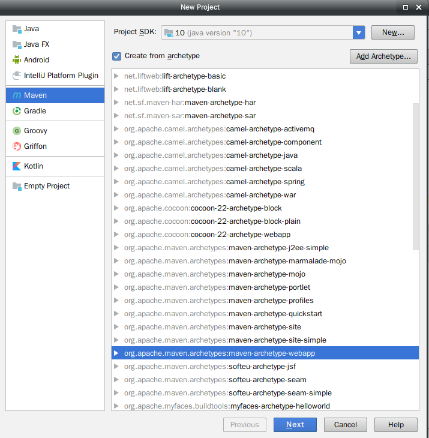
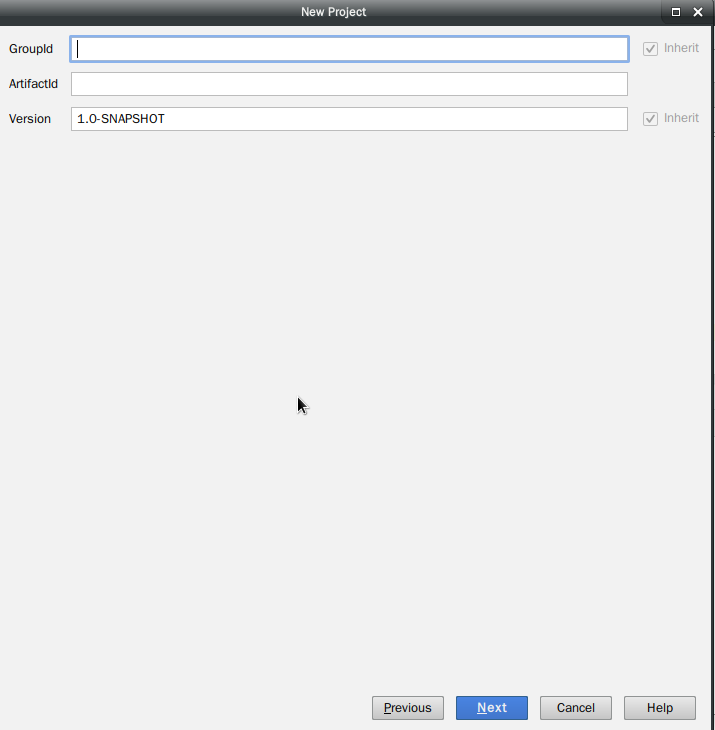
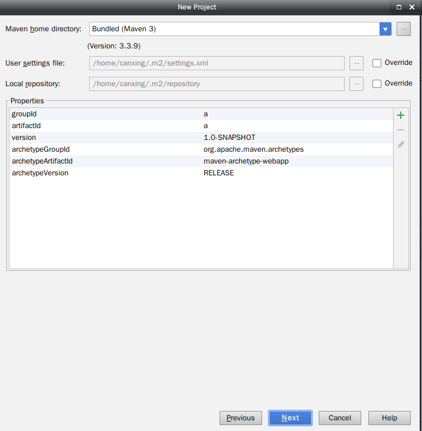
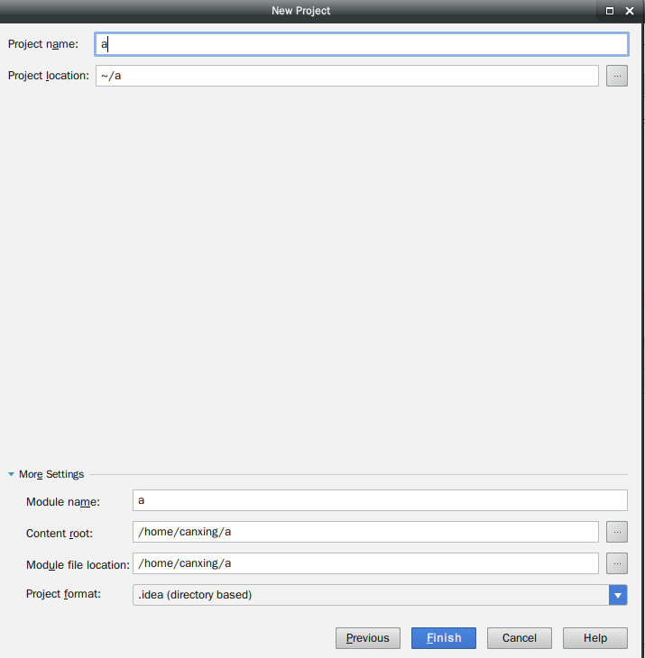
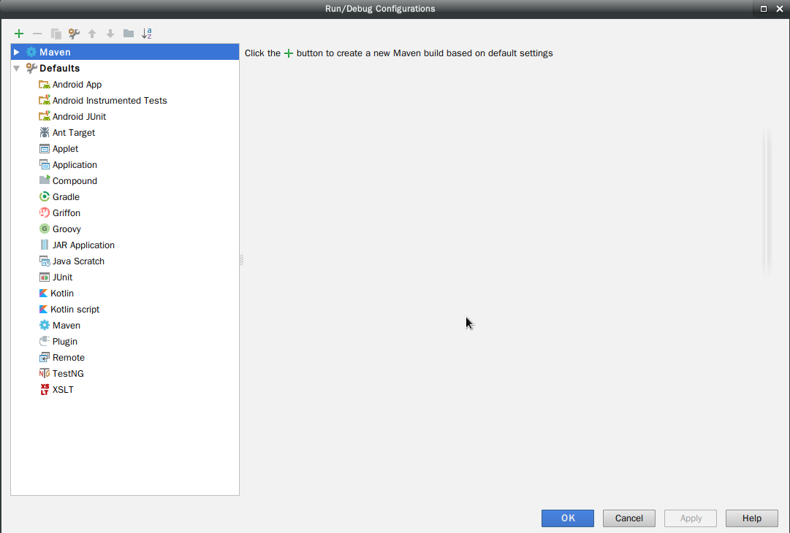
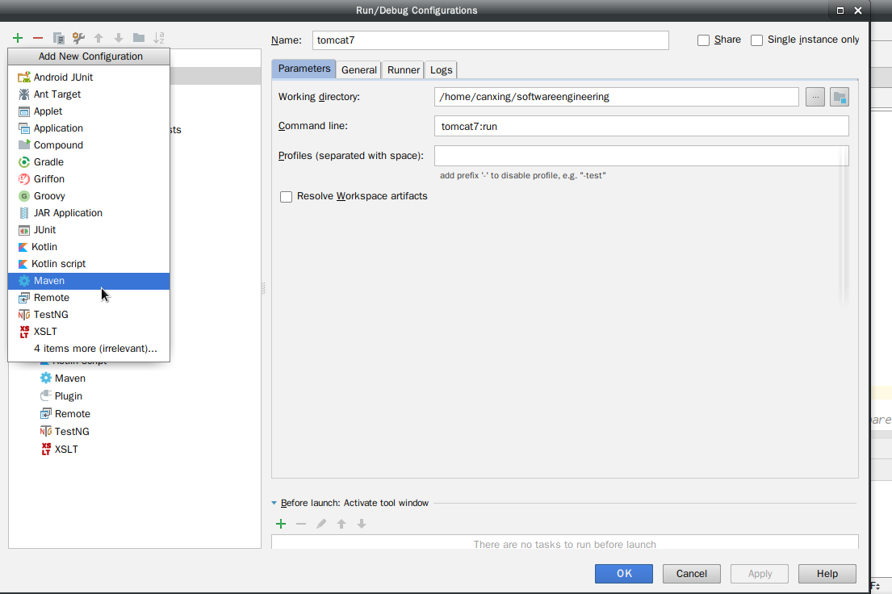
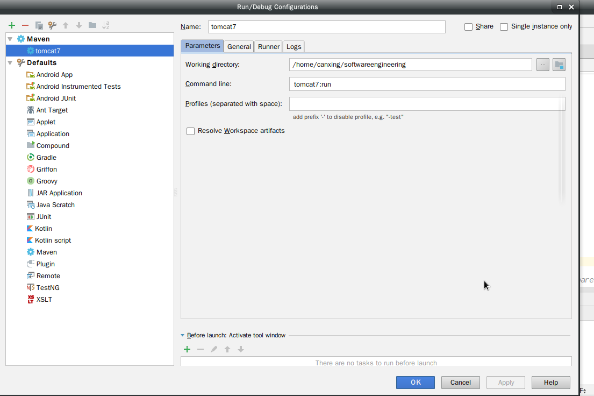
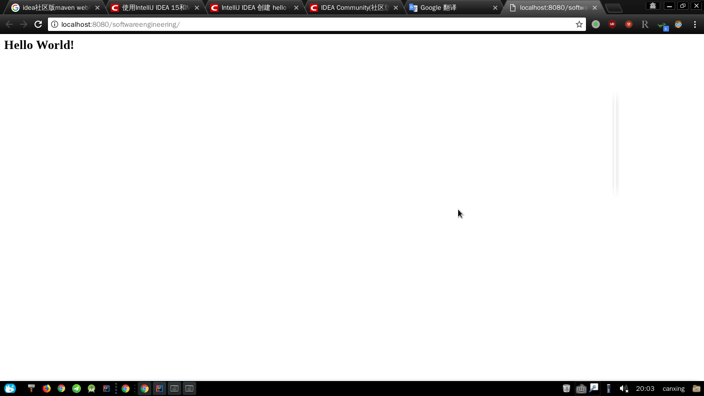

IDEA社区版是不支持web应用程序开发，但是IDEA支持Maven，在Maven配置文件中可以添加tomcat插件，因此可以使用IDEA进行web应用程序开发
一 新建Maven项目
在选择新项目时选择maven项目，勾选 Create from archetype，在下方选择maven-archetype-webapp，点击Next

输入GroupId和ArtifactId

选择Maven位置，如果Maven已经添加到环境变量，那么可以自动找到，如果没有配置，那么需要手动添加
User setting file为你的Maven配置文件，如果不是默认路径需要手动添加
Local repository为你的Maven仓库，如果不是默认路径需要手动添加

最后输入工程名称和工程位置

首次使用Maven会下载一些东西需要一些时间
二 配置tomcat
- 首先在tomcat中添加tomcat插件
1 | <plugins> |
这里使用的tomcat7
- 配置tomcat7
单击菜单栏 Run，选择Edit Configurations…，进入如下界面

默认只有一个Defaults，Maven是我配置好了的
选择+->Maven

输入Tomcat7，在Command line输入tomcat7:run完成配置

- 点击Run开始运行，打开浏览器查看结果如下
